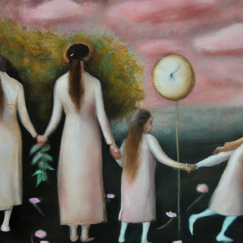
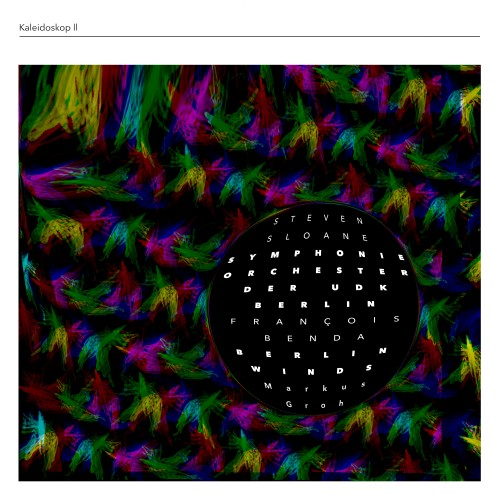
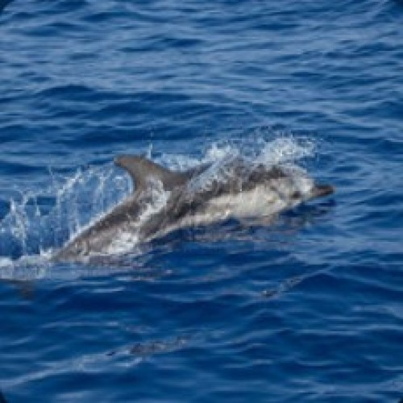
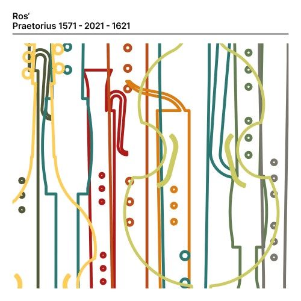
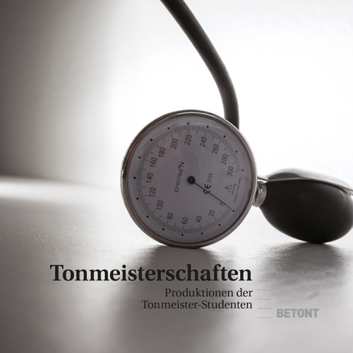
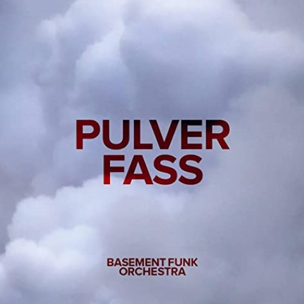
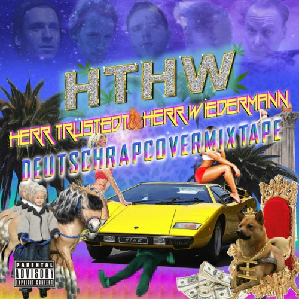

Alexey Shor / Mikhail Pletnev: Violin Sonata in B minor

Recording Engineer · DOP: Benoît Pain
Recording Engineer · DOP: Benoît Pain
I: Molto Allegro

Recording Engineer · DOP: Benoît Pain

Recording · Sound Design · Composition · Editing


Recording · Editing · Mixing
Translatlantilexic

Editing · Mixing
Metamorphoses Ovid-19

Editing · Mixing

Recording · Editing · Mixing
Music Composition & Performance

Recording · Editing · Mixing · Mastering

Composing · Recording · Editing · Musician

Recording · Editing · Mixing · Mastering